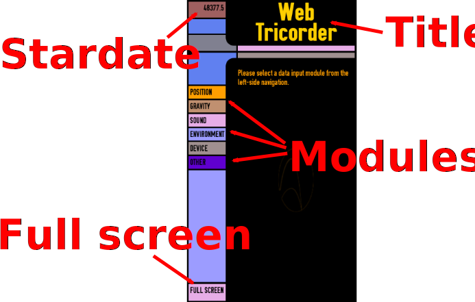

Table of Contents
Firefox OS Tricorder
The following slides are available in this presentation:
Firefox OS Tricorder
Reading Device Sensor Data in JavaScript
Robert Kaiser,
"KaiRo" <kairo@kairo.at>
Program Manager, Mozilla QA
Program Manager, Mozilla QA
Slides: http://slides.kairo.at/fosdem2015/
- Created for Mozilla Developer Room at FOSDEM 2015 in Brussels.
- Written in HTML 5 with CSS 3 and JavaScript.
- Navigation via links on all slides, via access keys (e.g. "n"/Alt+Shift+N for "next") or back/forward arrow keys
- Contents
 01/2015 Robert Kaiser -
"Mozilla", "Firefox" and their logos are
trademarks
of the Mozilla Foundation; Star Trek
and related items are trademarks of
Paramount Pictures.
01/2015 Robert Kaiser -
"Mozilla", "Firefox" and their logos are
trademarks
of the Mozilla Foundation; Star Trek
and related items are trademarks of
Paramount Pictures.
What is a Tricorder?

Sensor device as seen on "Star Trek"
Displays whatever data is needed at plot speeds and resolutions.
Firefox OS Tricorder App
Displays data from device sensors as exposed by WebAPIs
Firefox OS Tricorder UI

Module
- HTML (switch, display)
- JS Object
- 2 Methods: activate(), deactivate()
Position Module
Position: Code
this.watchID = navigator.geolocation.watchPosition( function(position) { position.coords.latitude / .longitude / .accuracy / ... }, function(error) { ... }, {enableHighAccuracy: true, maximumAge: 10000, timeout: 60000} ); navigator.geolocation.clearWatch(this.watchID);
Gravity Module
Gravity: Code
window.addEventListener("deviceorientation", this.orientEvent, true);
window.addEventListener("devicemotion", this.motionEvent, true);
orientEvent: function(orientData) {
orientData.alpha / .beta / .gamma (in °)
},
motionEvent: function(event) {
event.accelerationIncludingGravity.x / .y / .z (in m/s²)
},
window.removeEventListener("deviceorientation", this.orientEvent, true);
window.removeEventListener("devicemotion", this.motionEvent, true);
Sound Module
Sound: Code
navigator.getUserMedia({ audio: true }, function(aLocalMediaStream) { gModSound.mAudio.stream = aLocalMediaStream; gModSound.mAudio.context = new window.AudioContext(); gModSound.mAudio.input = gModSound.mAudio.context.createMediaStreamSource(gModSound.mAudio.stream); gModSound.mAudio.analyzer = gModSound.mAudio.context.createAnalyser(); gModSound.mAudio.input.connect(gModSound.mAudio.analyzer); }, function(err) { ... } ); // in window.requestAnimationFrame(): var data = new Uint8Array(gModSound.mAudio.frequencySlices); gModSound.mAudio.analyzer.getByteFrequencyData(data); // ... do something with data ... gModSound.mAudio.stream.stop();
Environment Module
Light, Proximity; Flashlight
APIs: devicelight, deviceproximity events; Camera API
Permissions: ---; camera (for Flash)
Environment: Code
window.addEventListener("devicelight", this.lightEvent, true);
window.addEventListener("deviceproximity", this.proxEvent, true);
lightEvent: function(lightData) {
lightData.value (in lux)
},
proxEvent: function(proxData) {
proxData.min <= .value <= .max (in cm)
},
window.removeEventListener("devicelight", this.lightEvent, true);
window.removeEventListener("deviceproximity", this.proxEvent, true);
// flash/torch code works via navigator.mozCameras.getCamera
// flaky and subject to change, please consult code on github
Device Module
Device: Code
0 <= navigator.battery.level <= 1 .charging (true/false) .chargingTime (in s; 0 or Infinity: unknown) .dischargingTime (in s; 0 or Infinity: unknown)
Questions?